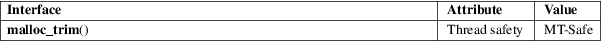

malloc_trim − release free memory from the heap
Standard C library (libc, −lc)
#include <malloc.h>
int malloc_trim(size_t pad);
The malloc_trim() function attempts to release free memory from the heap (by calling sbrk(2) or madvise(2) with suitable arguments).
The pad argument specifies the amount of free space to leave untrimmed at the top of the heap. If this argument is 0, only the minimum amount of memory is maintained at the top of the heap (i.e., one page or less). A nonzero argument can be used to maintain some trailing space at the top of the heap in order to allow future allocations to be made without having to extend the heap with sbrk(2).
The malloc_trim() function returns 1 if memory was actually released back to the system, or 0 if it was not possible to release any memory.
No errors are defined.
For an explanation of the terms used in this section, see attributes(7).

GNU.
glibc 2.0.
Only the main heap (using sbrk(2)) honors the pad argument; thread heaps do not.
Since glibc 2.8 this function frees memory in all arenas and in all chunks with whole free pages.
Before glibc 2.8 this function only freed memory at the top of the heap in the main arena.
sbrk(2), malloc(3), mallopt(3)